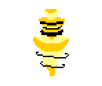
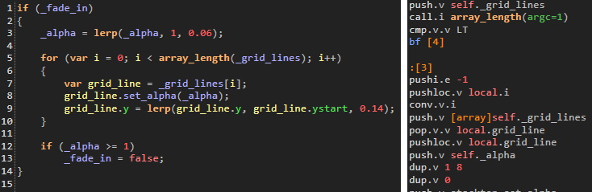
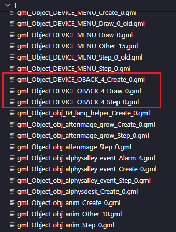
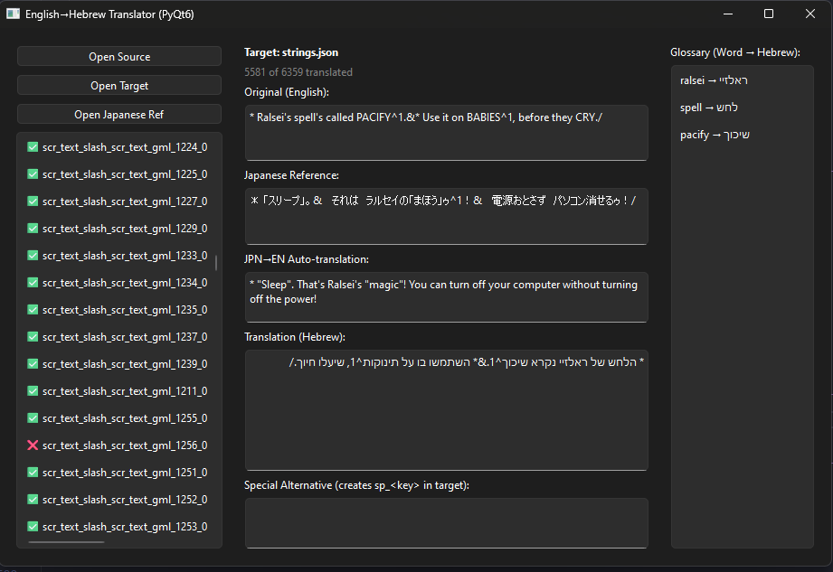

תרגום דלתארון - הצד הטכני
רציתי לשחזר את התחושה של התרגומים של מחשבת. רציתי להרגיש שוב את מה שהרגשתי כשראיתי את סיימון המכשף בשפה שלי. תמיד יש איזשהו ריחוק כשקוראים בשפה זרה, ולראות את סוזי, ראלזיי ואחרים מדברים בעברית צחה פשוט הופך אותם לקרובים יותר.
כמה אנשים ביקשו לשמוע על התהליך של התרגום, והאמת שיש לי מלא דברים נישתיים לספר על כל מה שקרה בדרך, אז הנה זה.
תשתית
ואני ממש לא הראשון שמנסה לעשות את זה. אנשים הרבה יותר מוכשרים ממני כבר פרסמו תרגומים של דלתארון לשפות אחרות. חלקם אפילו הלכו צעד קדימה ודיבבו קולות למשחק.
רובם, ואולי אפילו כולם, מתבססים על התשתית הנהדרת של Lazy-Desman/Neprim, שאחראיים גם על התרגום הרוסי של דלתארון.
התשתית הזאת מייצאת את כל הטקסט ,וגם טקסטורות שמכילות טקסט, לקבצים חיצוניים מתוך קבצי ה-DATA של המשחק.
ככה מתרגמים יכולים לעבוד על כל הטקסט בלי לגעת בקוד בכלל. מעבר לזה, היא מספקת עוד מלא פיצ'רים שימושיים כמו hot reload, שינוי מהירות ועוד כל מיני דברים שממש עזרו בתהליך.
אבל… היא תומכת רק בשפות משמאל לימין.
אפילו אם מוסיפים פונטים שתומכים בעברית, מקבלים משהו שבור לחלוטין.
בשלב הזה הבנתי שאין ברירה. צריך לערוך את הקוד של טובי.

רקע נוסף, מקווה שאתם חנונים
בדרך כלל, כשמפתחים משחקים, כותבים קוד בשפה כמו C, שאחר כך נכנסת לקומפיילר (או בשם העברי המדהים: "מהדר") ומומרת לקוד מכונה שמחשבים יודעים להריץ.
שפות אחרות, כמו Java (וגם Python במידה מסוימת), עובדות קצת אחרת... במקום להוציא קוד מכונה, ה"מהדר" מייצר ByteCode — סוג של מצב ביניים בין קוד קריא לקוד מכונה.
אחר כך, בזמן שהתוכנה רצה, מכונה וירטואלית (VM) מפרשת את הקוד הזה. הרבה פעמים עושים את זה כדי שאותו קוד יוכל לרוץ על כמה פלטפורמות שונות.
כשמייצאים משחק מ-GameMaker, אפשר לבחור אם להשתמש ב-VM או לקמפל ישירות לפלטפורמה. טובי, יתברך שמו, בחר ב-VM.
בפועל זה אומר שהקוד הופך ל-ByteCode ואז נארז יחד עם כל הארט, הסאונד ושאר הקבצים בתוך קובץ DATA.
והחלק הטוב בכל זה, אפשר לבצע עליו Decompilation ולהחזיר אותו לצורה יחסית קריאה.

ועם זה כבר אפשר לעבוד.
מודים של דלתארון ואנדרטייל מנצלים את זה כבר שנים. יש כלי ממש מוצלח של הקהילה שמחלץ קבצי DATA, ויכול גם לעשות Decompilation — תהליך שלוקח ByteCode והופך אותו לקוד קצת יותר אנושי.
כזה שאפשר לערוך.
בשלב הזה נשאר לי רק להכין סקריפטים שמחלצים ואורזים מחדש את הקוד אוטומטית, כדי לא לבזבז זמן על GUI.
בואו נכתוב קוד
התוצאה נראתה בערך ככה: מאות קבצים, שכל אחד מהם אחראי על פונקציה אחת או על אספקט מסוים של אובייקט.

זה נראה מפחיד, אבל האמת שלא באמת.
לדוגמה, הנה שלושה קבצים שמכילים קוד של אובייקט מסומנים באדום. אחד לקוד שרץ בזמן יצירת האובייקט, אחד שרץ בזמן שמציירים אותו, ואחד שרץ בכל "step" — כלומר כל יחידת זמן במשחק.
אני לא אתיש אתכם עם כל שינוי קטן שעשיתי, אבל למשל obj_writer — האובייקט שאחראי על הלוגיקה של הדיאלוגים הראשיים — הסתכם פחות או יותר ב:
1.
לקחת את נקודת ה-X של הטקסט ביחס למצלמה.
2.
להפוך אותה יחסית לגודל המסך.
3.
לשנות ליישור לימין.
4.
לסדר מחדש את הלוגיקה של הכתיבה כדי שהרווחים בין האותיות יהיו נכונים.
5.
להחליף הרבה סימני + ב--.
6.
להפוך סדר של מספרים וסוגריים כדי שייראו נכון:
)001( → (100).
7.
להפוך את כל הטקסט אם מדובר בטקסט סטטי.
כל פעם שכתבתי משהו כזה, הרצתי פקודה שארזה מחדש את כל הקוד ואז בדקתי במשחק כמה פישלתי.
כלי התרגום
על כלי התרגום עצמו אולי אדבר ביום אחר, אבל בגדול — אין לי מילים לכמה שאני שונא לתכנת GUI. זה אחד המקומות שבהם פשוט הרמתי ידיים והסברתי ל-AI בדיוק מה אני רוצה.
ביקשתי ממנו להכין סקריפט פייתון עם QT (כי התמיכה של GTK ב-RTL פשוט לא קיימת), הוספתי כמה פיצ'רים ספציפיים שרציתי, וזהו פחות או יותר.

מבין הפיצ'רים שיש לכלי התרגום:
•
רשימת קטעי טקסט, מה תורגם ומה לא (וכמה נשאר).
•
הטקסט המקורי באנגלית.
•
התרגום המקורי ביפנית (התרגום הרשמי היחיד) עם תרגום אוטומטי לאנגלית.
•
אפשרות להוסיף טקסט אלטרנטיבי למצב עברית פלוס.
•
רשימת מושגים שגדלה עם עבודת התרגום.
•
קיצורי מקלדת כדי לשלב את הסימנים המיוחדים בקלות.
סיכום + וידוי
יצרתי כאן קצת מצג שווא. לא צריך לדעת לתכנת ברמה גבוהה כדי לעשות תרגום למשחק.
אני זורק פה כל מיני מושגים וקונספטים מפוצצים, אבל את רובם למדתי תוך כדי תנועה. לא הכרתי את המבנה של GameMaker, ולא היה לי מושג איך עושים לו מודים עד שהתחלתי לחפש.
ולשם הפרוטוקול, הנה כמה דברים מביכים שקרו במהלך הפיתוח:
•
הקרסתי את המשחק עשרות פעמים.
•
גיליתי שאני מריץ את פונקציית היפוך הטקסט 60 פעמים בשנייה עבור כל אות בכל טקסט.
כנראה גרמתי למחשבים שלכם להזיע.
•
שכחתי מתמטיקה בסיסית וטעיתי בחישוב ממוצע.
•
השחתתי את הקבצים המקוריים של המשחק ונאלצתי להתקין הכול מחדש.
•
פקודת Git לא נכונה מחקה לי עבודה של שלוש שעות.
•
שגיאת כתיב אחת גרמה לבאג שלקח לי שעות למצוא.
מקווה שעם הטקסט הארוך הזה אולי נתתי למישהו רעיון איך להתמודד עם תרגום של משחק אחר.